The software project was designed to facilitate, organize and automate the processes that involve trademark and patent registration, making employee communication faster and more efficient.
We designed the user interface and user experience of the software based on user needs, respecting the brand identity and making navigation intuitive.
Workshops and user interviews were conducted during field research immersive in the workplace. These activities help us to understand how people behave in the real work context.
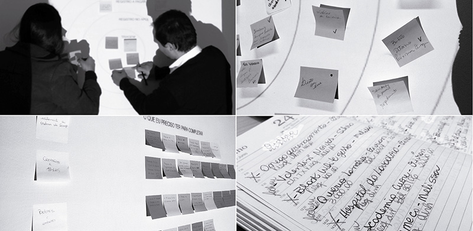The data collected was compiled to build personas, user journeys, and other reports.
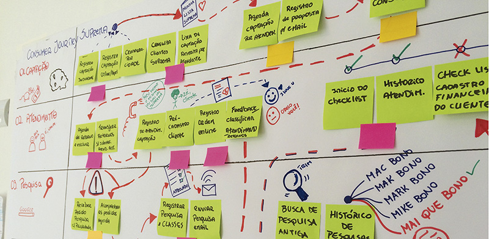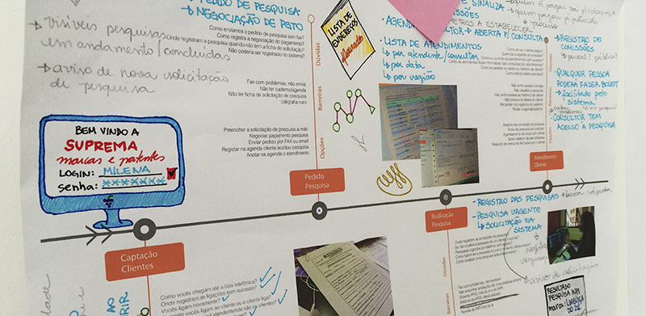
At this stage, we started a competitive analysis of existing software, and we mapped the functionalities and started to connect the standards that are being used to identify innovation opportunities.
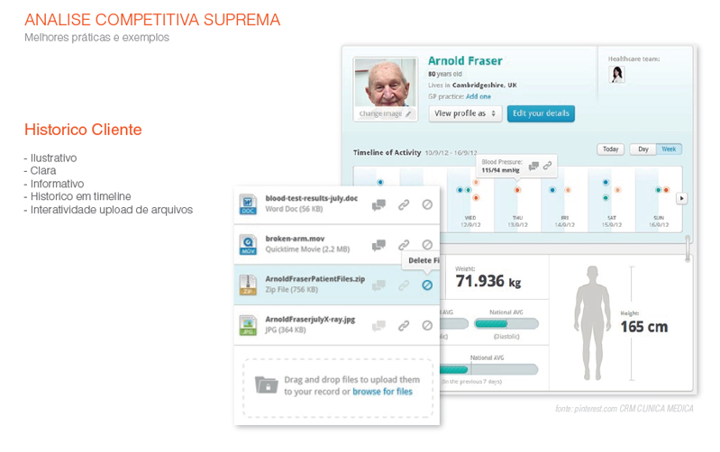We started writing storyboards that are comic books designed to illustrate user actions while using the product. This tool helped us more tangibly translate the real situations of everyday users.
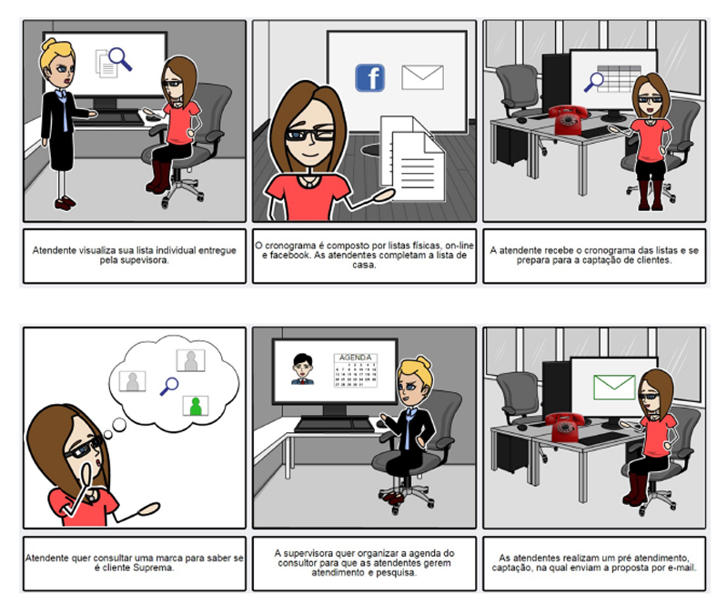Also at this stage, we designed layout alternatives through sketches or low fidelity prototypes, which were very useful to validate concepts quickly.
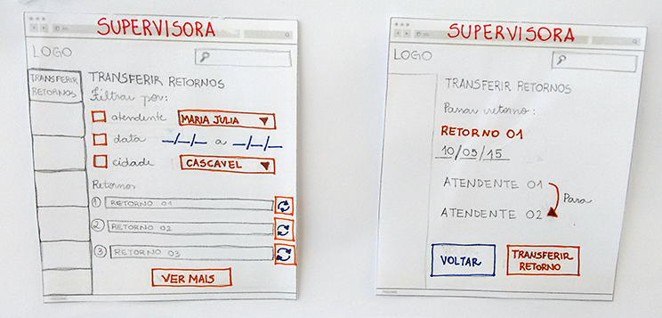After validations between the team, we created navigable prototypes. Prototyping is a quick and inexpensive way to validate and test an idea with users without having to develop the product.
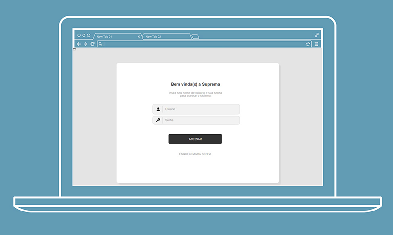 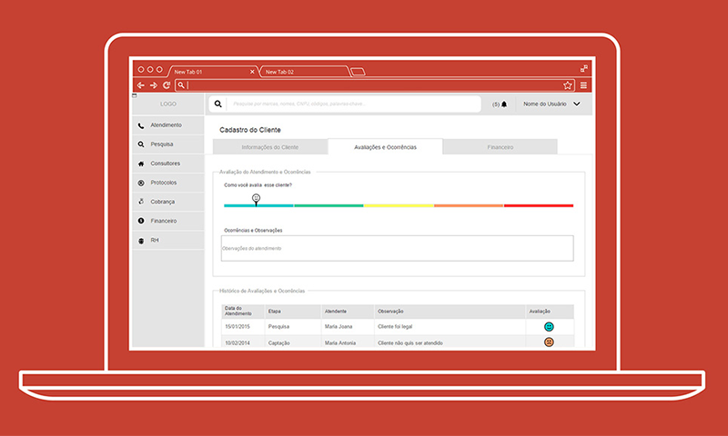 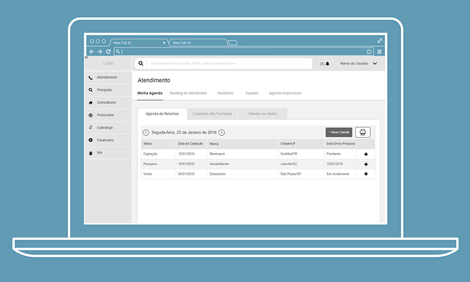 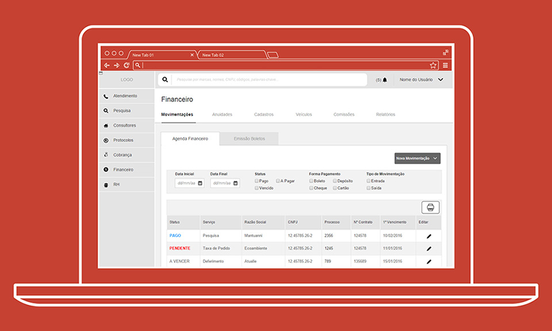We conducted workshops to validate interface elements and also applied usability tests to users. We also involved development teams to make technical validations and give us feedback.
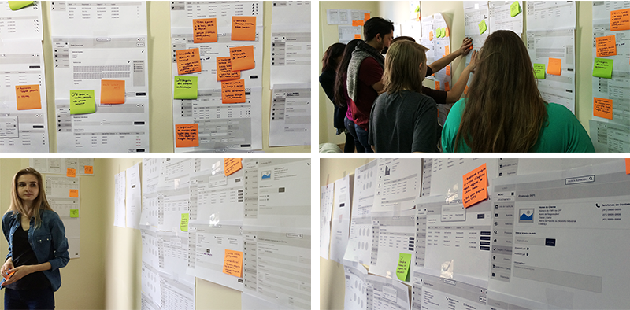We created flowcharts to visually represent user interaction within the software. This made the workflow easier to understand, supporting the development teams.
The visual design and style guide were designed respecting the brand identity
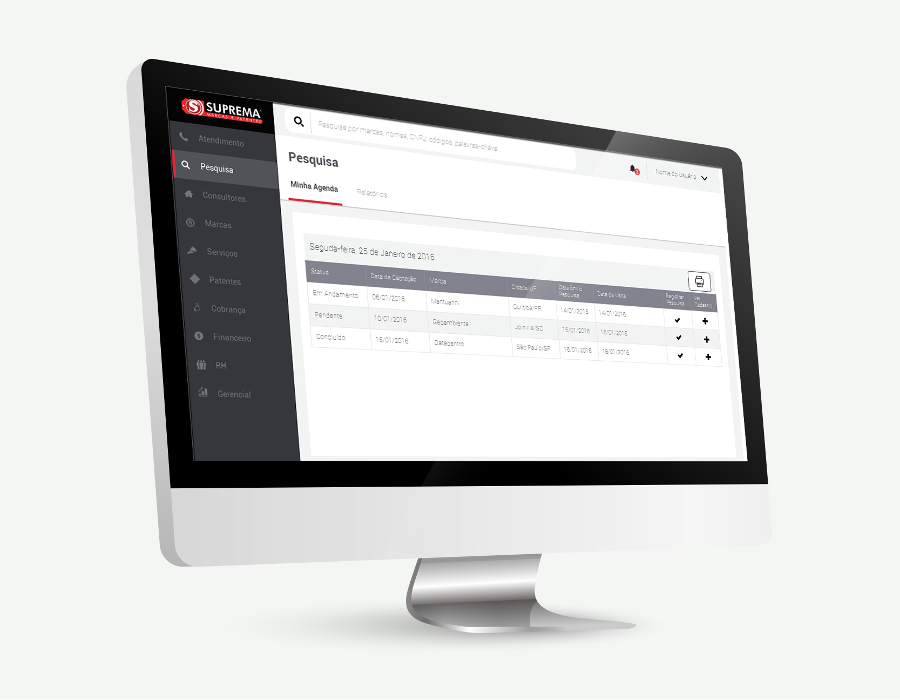After delivering to the development teams all documents created, we followed the development and we gave support in clarifying questions, contacting the customer for testing, implementation monitoring and analysis of situations where occasional changes were required.